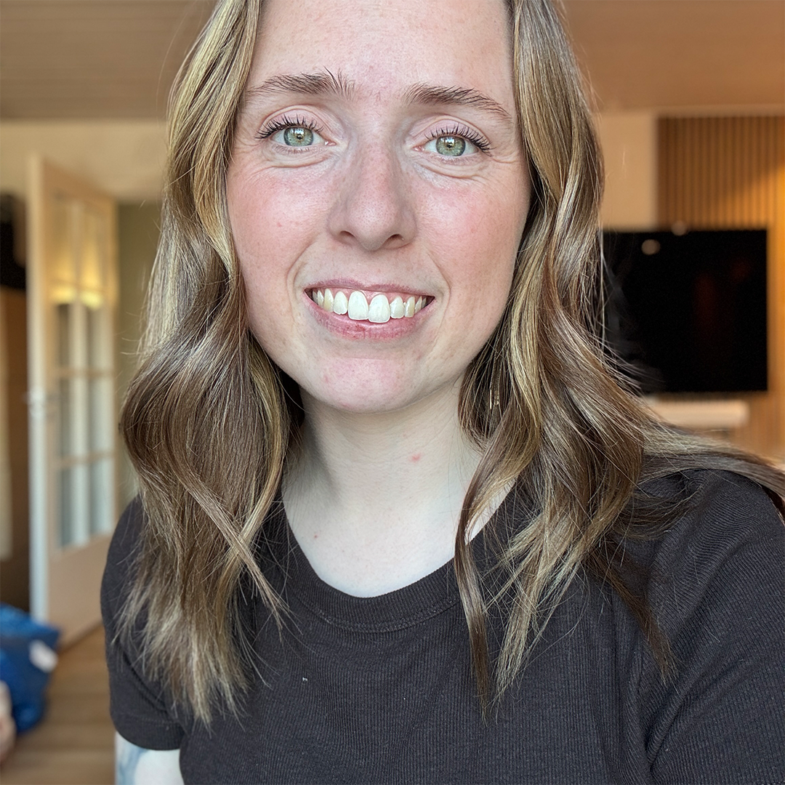

OM MIG
Mit navn er Daniella Duncan Gøtterup. Jeg er 28 år gammel og bor i et rækkehus i Hvidovre sammen med min mand og vores to børn.
Min mand og jeg har været sammen i 11 år og blev gift for 3,5 år siden. Sammen har vi to drenge på henholdsvis 4 år og 1 år, og en stor del af min hverdag består derfor af både studieliv og familieliv.
Jeg har flyttet en del som barn, da mine forældre er skilt, og vi har primært boet på Vestegnen. Jeg har flere søskende på både min mors og fars side, hvilket har været en naturlig del af min opvækst.
Fodbold fyldte meget i min barndom, og da vi boede i Brøndby, spillede jeg både på ungdoms- og seniorhold. Som voksen er jeg dog faldet mere til ro og bruger i dag meget af min fritid på at læse, en interesse, jeg også har taget med mig ind i min uddannelse.

JOB OG ERFARING
Mit første job fik jeg som 15-årig i en frozen yogurt-butik som sommerassistance. Siden da har jeg arbejdet i en børnetøjsbutik, på Bakken, som tjener i en restaurant, i Bilka Quickfood/bager samt arbejdet fuldtid i en vuggestue i syv år.
SKOLE OG UDDANNELSE
Min folkeskoleperiode fra 2004–2014 var præget af mange flytninger, hvilket resulterede i, at jeg gik på omkring fem forskellige skoler. Efter folkeskolen tog jeg 10. klasse på idrætslinjen og fortsatte derefter på en handelsgymnasial uddannelse (HHX).
I mange år troede jeg, at jeg skulle være pædagog, og efter gymnasiet tog jeg et sabbatår i en vuggestue, som udviklede sig til flere år i faget. Efter jeg selv fik børn, kunne jeg dog ikke længere se mig selv i pædagogfaget og valgte derfor at søge ind på multimediedesignuddannelsen.
Jeg havde ikke på forhånd forestillet mig, at denne uddannelse var noget for mig, men gennem min interesse for bøger, sociale medier og især Instagram som fællesskab og anmelder, voksede min interesse for grafisk design og digital formidling og her fandt jeg multimediedesign som det rette match.